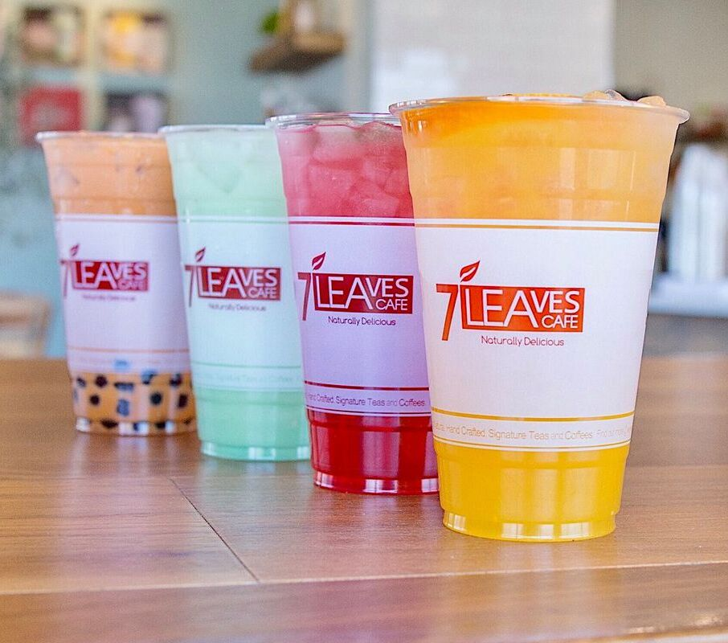

7Leaves
7Leaves' house coffee, which is a version of Cafe Sua Da topped off with sea salt cream, is one of their signature drinks! 7Leaves can also serve as your typical boba shop because of their other selection in delicious drinks (with toppings like boba and aloe vera :D). There are numerous 7Leaves locations across SoCal, so luckily, there is a strong likelihood that if you're anywhere in the LA/OC area, you'll find a location near you. Use the buttons above to explore all the different 7Leaves locations :D
Here are some other popular/signature drinks served at 7Leaves:
- Sea Cream Tea Jasmine
- Strawberry Hibiscus Tea
- Mung Bean Milk Tea
- Sunset Passion
- Japanese Matcha and Soy
You can find their menu on their website here
